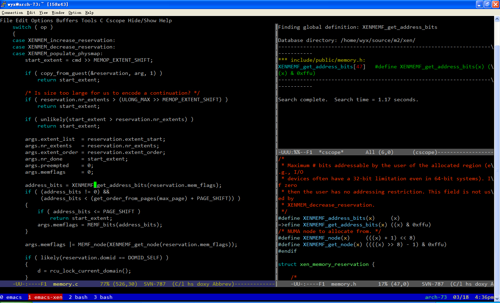

通过 tput colors 命令可以看到当前终端的颜色数，如果已经是256色了那么请跳过这一块。
以bash为例，在~/.bashrc中加入
export TERM=xterm-256color即可。重新登陆到终端后再检查当前的颜色数，如果依然是16色，可能是当前终端不支持，或是缺少某些包（如ubuntu下可能需要安装ncurses-term）。
另外这里有个测试脚本可以检查是否能正常显示256色。
Archlinux中通过pacman安装的screen默认就支持256色的终端。 其他情况下如果screen不支持的话可能需要开启—enable-colors256选项重新编译安装。
进入emacs后按M-x运行list-colors-display即可查看当前支持的颜色列表。这里推荐一个终端下的配色方案 color-theme-clarity，效果如下图 